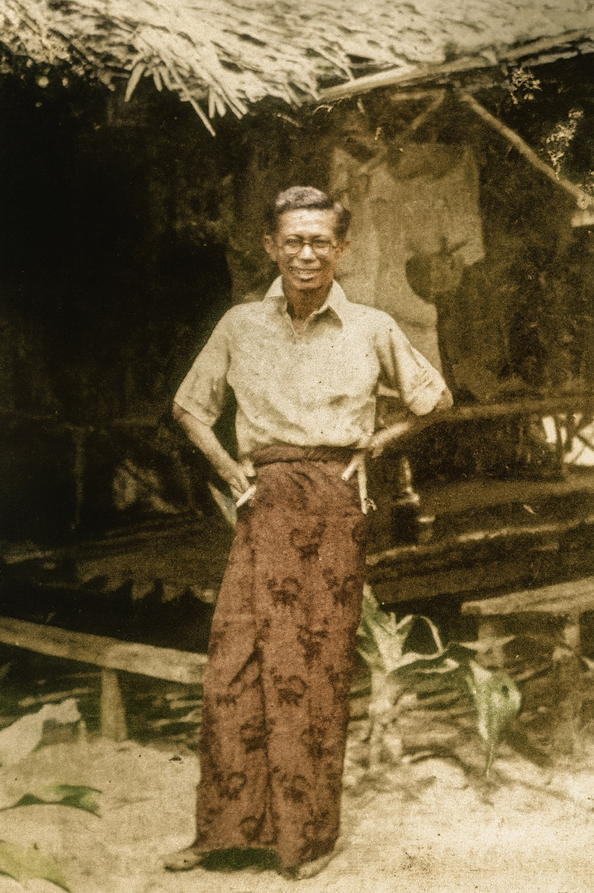

The Last Siamese
A Man Between Two Worlds
So Sethaputra represented the last generation of the old Siamese elite—Western-educated royalists who witnessed their world disappear in revolution, war, and social upheaval.

In the photograph, So Sethaputra stands with quiet dignity on the remote prison island of Tarutao, his white shirt immaculately pressed despite years of confinement, his hair carefully combed, his bearing unmistakably that of a gentleman. Even in exile, even as Prisoner Number 26, he maintained the composure and refinement that marked him as a product of old Siam’s educated elite. This was a man who refused to let circumstances diminish his sense of self—a characteristic that would prove essential to his survival and to the completion of his life’s work.
Born in 1903 into a world that seemed as permanent as the golden spires of the Grand Palace, So Sethaputra was shaped by the confidence and cultural certainty of late-nineteenth-century Siam. His was a Thailand that still called itself by its ancient name, a kingdom that had successfully navigated the treacherous waters of European colonialism while preserving its independence and dignity. The Siam of So’s youth was a society in transition, cautiously embracing modernity while jealously guarding its traditions—much like So himself would do throughout his extraordinary life.
The Inheritance of Two Worlds
So’s family embodied the intellectual flowering of late Siamese society. His father was “an inquisitive scientist who spent his life inventing new contraptions,” a man whose sharp analytical mind and passion for understanding the natural world would be passed down to his son. In an era when traditional knowledge systems were encountering Western scientific methods, So’s father represented the bridge between worlds—a Siamese intellectual who could appreciate both the wisdom of the ancestors and the discoveries of European science.
But it was from his mother, Gaysorn, that So inherited perhaps his most crucial gifts: a love of language, literature, and the written word. In a society where female literacy was still uncommon, Gaysorn was “one of the few Siamese women at the turn of the last century who could read and write.” This was no small achievement in traditional Siam, where education had long been the preserve of men and the monastic community. Her ability to navigate the world of letters made her exceptional, and she would use this gift not merely for her own enrichment but to become the invisible co-author of her son’s greatest work.
From his mother, So “developed a passion for literature, books and writing”—a passion that would sustain him through the darkest years of his imprisonment. But Gaysorn’s influence went far beyond intellectual inspiration. She was, as So would later write in one of his dictionary entries, the embodiment of the truth that “motherly love can never be destroyed.” This love would manifest itself in ways that seemed impossible: smuggling thousands of manuscript pages out of maximum-security prisons, maintaining a secret correspondence network, and sustaining her son’s work even when the authorities sought to destroy it.
When So’s father died, Gaysorn “devoted her entire life to him,” becoming not just a mother but a patron, collaborator, and co-conspirator. Their relationship would prove to be one of the most remarkable partnerships in the history of Thai literature—a bond that transcended the walls of prisons, survived the chaos of war, and ultimately brought one of Thailand’s most important educational works into existence.
The Last Golden Age
The Siam of So’s youth was a kingdom at the height of its cultural confidence. Under King Chulalongkorn (Rama V) and his successor King Vajiravudh (Rama VI), the country had undertaken a remarkable transformation, modernizing its institutions while preserving its essential character. This was the era of grand railways and telegraph lines, of new schools and hospitals, of a bureaucracy increasingly staffed by merit rather than birth. Yet it was also still recognizably the Siam of old—a Buddhist kingdom where the monarch was revered as a semi-divine figure, where court ceremony maintained its ancient magnificence, and where tradition provided the stable foundation for progress.
For the educated elite of So’s generation, this seemed like the best of all possible worlds. They could study at European universities—as So would at a mining engineering program in England—while returning to positions of honor and influence in a society that valued their knowledge. They could embrace Western learning without abandoning their cultural identity, could appreciate Shakespeare and Dickens while remaining deeply rooted in Thai literature and Buddhist philosophy.
This was a generation that believed in progress without revolution, in reform without rupture. They saw themselves as the inheritors of a great civilization that was successfully adapting to the modern world. The idea that this entire order might be swept away by military coup, that they might find themselves branded as enemies of the state, would have seemed not just unlikely but almost inconceivable.
A Mind Shaped by Two Traditions
So’s education followed the pattern typical of his class and generation. After his foundational schooling in Siam, he traveled to England to study mining engineering—a practical field that reflected the kingdom’s modernizing ambitions. The choice was not accidental: Siam in the early twentieth century was eager to develop its natural resources and reduce its dependence on foreign expertise. Young men like So were seen as the future leaders who would combine Western technical knowledge with Thai cultural understanding.
But So’s years in England exposed him to more than engineering principles. He encountered the great traditions of English literature, became fluent in the language not just as a technical tool but as a medium of culture and expression. He absorbed the English respect for democratic institutions, for parliamentary debate, for the gradual evolution of political systems. When he wrote from England in 1923 that students in France were “plotting against the monarchy” and expressed his fear that “they are not interested in democratic change,” he was speaking as someone who had come to appreciate the English model of constitutional development.
Most importantly, his time abroad gave him a comparative perspective on his own society. He could see Siam’s strengths and weaknesses with the clarity that comes only from distance. He understood that “parliamentary democracy cannot be instituted by military rule; it is a gradual learning process, requiring education, experience and good will.” This wisdom, gained in the libraries and lecture halls of England, would inform his later opposition to the hasty and militaristic changes imposed on his homeland.
The Royal Spokesman
When So returned to Siam in 1926, he made a choice that revealed much about his character and values. Despite his training in mining engineering, he was “more interested in journalism” and “was a gifted writer.” Rather than pursuing the lucrative and prestigious career that his technical education had prepared him for, he followed his intellectual passions into the world of media and communication.
His work at the Daily Mail as a political correspondent brought him to the attention of the highest levels of government. In 1928, “he was recognised by his Majesty the King for his communication and language skills and was appointed Royal Spokesman, today’s equivalent of press secretary.” This appointment came with the royally-bestowed title of “Luang Mahasit Woharn”—literally, “the man of great eloquence.”
The title was more than ceremonial recognition; it reflected So’s genuine gifts as a communicator and his deep understanding of both Thai and Western cultures. As Royal Spokesman, he served as the bridge between the ancient institution of the monarchy and the modern world of journalism and public opinion. He became “an analyst and adviser on current diplomatic affairs, foreign trends and local personalities,” and “an integral part of the official secretariat of the Royal household.”
In this role, So was perfectly positioned to understand the tensions and possibilities of his era. He could see how Thailand was viewed by the outside world, could gauge the pressures for change that were building both domestically and internationally. He shared with King Prajadhipok (Rama VII) the belief “that a constitutional monarchy supported by a true democratic parliamentary system would soon prevail in Siam.”
This was the vision of gradual, organic change that appealed to thoughtful members of the educated elite: reform that would preserve the best of the old while incorporating the most valuable elements of the new. It was a vision that required patience, wisdom, and good faith on all sides—qualities that would prove to be in tragically short supply when the crisis finally came.
The World That Was Lost
The photograph from Tarutao captures more than just So’s personal dignity; it preserves an image of a vanished world. The man in the white shirt, maintaining his standards even in prison, represents the last generation of the old Siamese elite—a class that combined deep cultural roots with cosmopolitan education, traditional values with modern knowledge, loyalty to the monarchy with appreciation for democratic ideals.
These men and women had grown up believing that their society was successfully navigating the challenges of modernity. They had seen their kingdom preserve its independence when neighboring Burma, Cambodia, Laos, and Malaya fell under European control. They had witnessed the steady development of infrastructure, education, and governance that seemed to promise continued progress without revolutionary upheaval.
But history had other plans. The military coup of 1932 would shatter this world as completely as if an earthquake had struck. The patient work of constitutional reform would be swept aside by the impatience of junior officers. The gradual evolution toward democracy would be replaced by the harsh rule of military strongmen. And men like So Sethaputra—the very people whose education and expertise should have made them leaders of the new order—would find themselves branded as enemies and exiled to remote prison islands.
Yet even in defeat, even in exile, So carried within himself the values and culture of the world he had lost. His insistence on maintaining his personal dignity, his commitment to education and learning, his belief in the power of knowledge to transcend political persecution—all of these reflected the best qualities of the civilization that had shaped him.
The dictionary he would create in prison was more than a reference work; it was a preservation of that lost world, a bridge between the Siam that was and the Thailand that was becoming. In every carefully crafted definition, in every example sentence drawn from literature and experience, he was keeping alive the cultural traditions and intellectual values that the new order seemed determined to destroy.
Standing on Tarutao in his pressed white shirt, So Sethaputra was indeed “the last Siamese”—not because he was the final representative of an ethnic group, but because he embodied the spirit of a civilization that was passing away. His story is the story of that transformation, and of one man’s extraordinary effort to preserve something precious in the midst of revolutionary change.